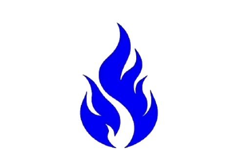
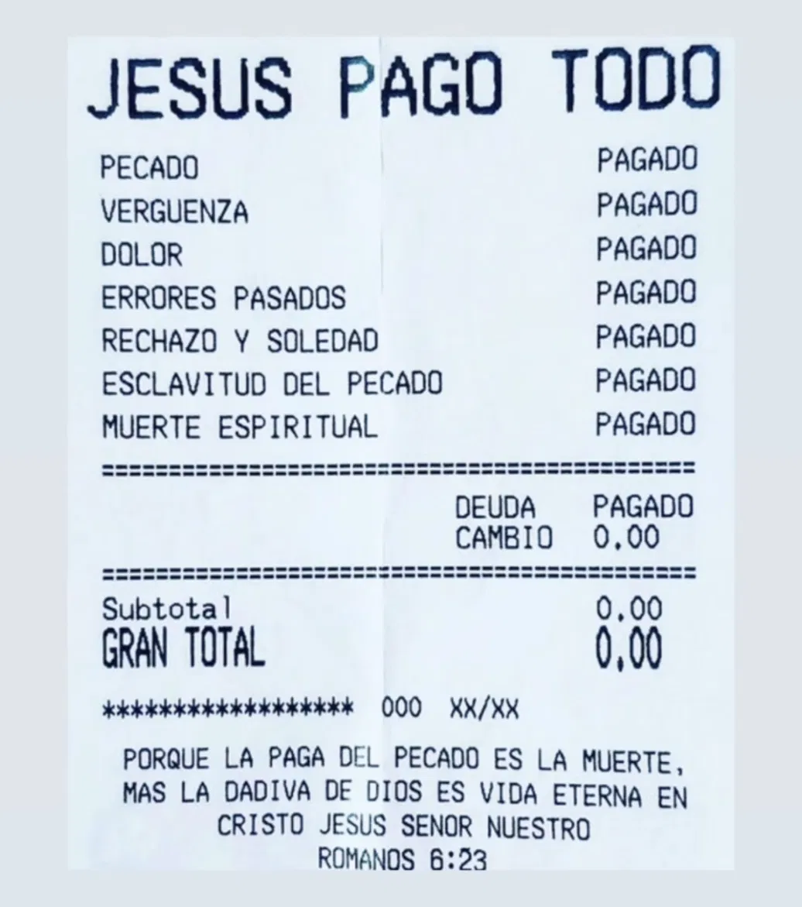

Reunión Familiar
Un tiempo para adorar, aprender de la Palabra y compartir como familia.
17:00 h
Lugar deAvivamientoOviedo


Un lugar para encontrarte con Dios, crecer en la fe y vivir en familia.
Tenemos un espacio preparado para cada etapa, cada familia y cada persona.
Un tiempo para adorar, aprender de la Palabra y compartir como familia.
17:00 hUna conversación, un café y una palabra que puede transformar tu día.
20:00 hUn espacio para jóvenes que quieren conocer y vivir más de Dios.
19:00 hCada domingo vivimos un encuentro especial con Dios y con nuestra familia de fe.


Un café, una palabra, una sonrisa. Compartimos el amor de Cristo en cada conversación.


Un espacio diseñado para jóvenes que quieren crecer en fe y vivir una vida transformada.



El fuego es nuestro símbolo: representa pasión, vida, esperanza y el deseo de llevar el amor de Cristo a cada persona y a cada familia.
Una identidad que nos impulsa a vivir la fe, formar discípulos y llevar el evangelio a las naciones.
Somos una comunidad viva y sin ánimo de lucro que se dedica a proclamar, practicar y enseñar el evangelio de fe y poder.
Nuestro objetivo principal es formar discípulos para Jesucristo, considerado el único mediador entre Dios y los hombres, para bendecir a Colombia y a las naciones.
Desarrollar un avivamiento espiritual permanente y continuo bajo el señorío de Jesucristo.
Este avivamiento genera un crecimiento integral en las personas y busca establecer el reino de Dios en la tierra y en todas las naciones.
Conoce a los líderes que guían Lugar de Avivamiento con pasión y dedicación.
Pastores Principales
Líderes apasionados dedicados a guiar nuestra comunidad en el camino de fe, proclamando el evangelio con poder y amor.
Somos Iglesia Cruzada Cristiana, una comunidad viva comprometida con la proclamación, práctica y enseñanza del evangelio de fe y poder.
Un lugar donde encontrarte con Dios, crecer en la fe y vivir en familia, llevando la esperanza de Cristo a cada persona.
Formar discípulos para Jesucristo, considerado el único mediador entre Dios y los hombres, para bendecir a Colombia y a las naciones.
Nos dedicamos a proclamar un evangelio de fe y poder que transforma vidas y establece el reino de Dios en la tierra.
Desarrollar un avivamiento espiritual permanente y continuo bajo el señorío de Jesucristo.
Este avivamiento genera un crecimiento integral en las personas y busca establecer el reino de Dios en la tierra y en todas las naciones.
Cada persona tiene una historia. Estas son algunas de las que queremos compartir.
Encontré una familia donde puedo crecer, aprender y acercarme cada día más a Dios.
Llegué buscando un lugar donde sentirme acompañado y terminé encontrando una comunidad que me recibió con mucho cariño.
Café con Jesús se convirtió en uno de mis momentos favoritos de la semana.
Una selección de nuestros eventos y momentos compartidos.


Escríbenos. Puedes enviarnos un mensaje, una petición de oración o simplemente saludarnos.
Estamos en Oviedo, Asturias.
Calle Tito Bustillo 2 bajo A
Oviedo – Asturias, España